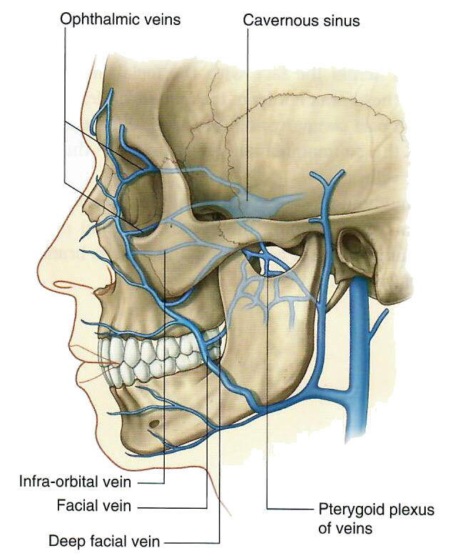

Neurology 5 - Module 3 - Muscles, Nerves and Vessels: Page 5 of 6
×

|  |
| Tap on image to enlarge |
Venous return
| Change to a lateral view of the skull with the mandible removed. |
| Add the internal jugular veins. |
| Add the external jugular veins. |
| Add the posterior auricular vein. |
By now you probably noticed that the external jugular veins on the left and right sides originate in different places. The left external jugular vein is not connected at all in the current view. To what vein do you think it might be connected? |
|
|
The retromandibular vein. |
|
| Add the retromandibular vein. |
| Add the superficial temporal vein. |
| Add the maxillary veins. |
| Add the facial vein. |
| Add the angular vein. |
| Add the supra-orbital vein. |
| Add the mandible for reference. |